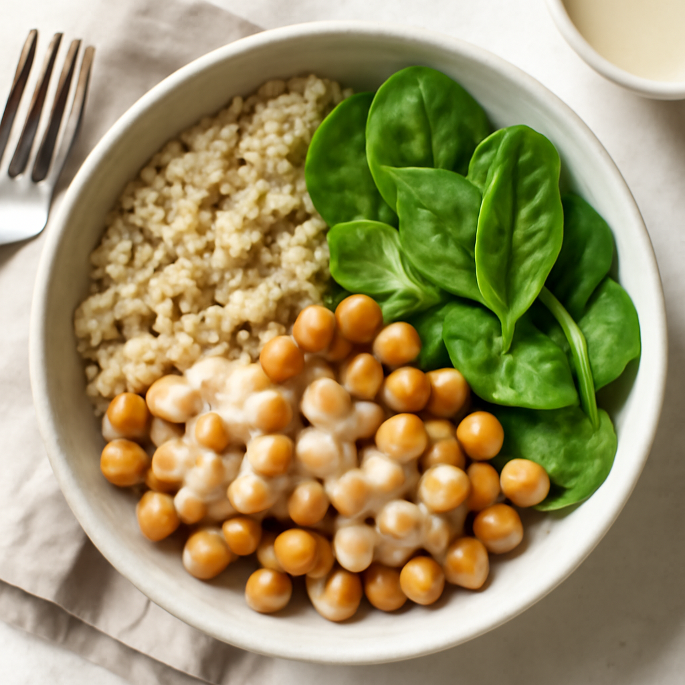

Friday — Chickpea and Spinach Bowls

Cook Time: 30 minutes
Method: Pressure Cooker
VegetarianQuickBowls
Ingredients for 6
- 2 cans (15 oz each) chickpeas (rinsed)
- 4 cups spinach (fresh)
- 1 cup quinoa
- 1/4 cup tahini
- 2 tablespoons lemon juice
- Salt and pepper to taste
Instructions
- Cook quinoa in pressure cooker with double the amount of water as quinoa for 1 minute, then natural release.
- In a bowl, combine chickpeas, spinach, cooked quinoa, tahini, lemon juice, salt, and pepper. Toss to combine.
Toddler Notes
- Chickpeas should be mashed for easier eating; serve quinoa and spinach mixed.
← Back to weekly plan